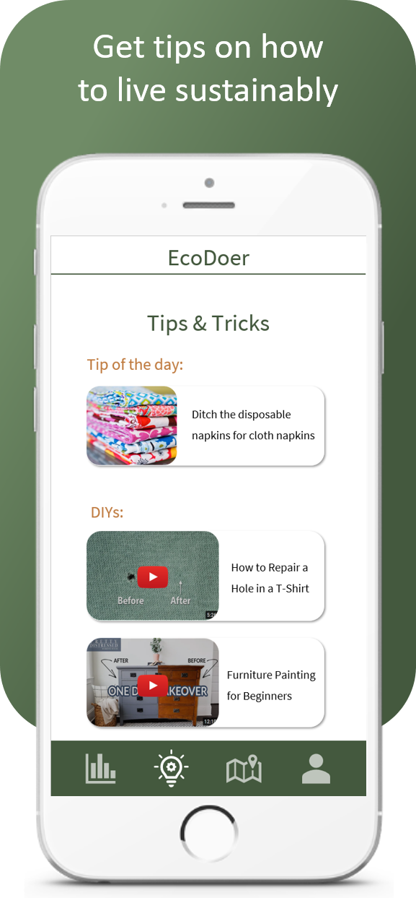
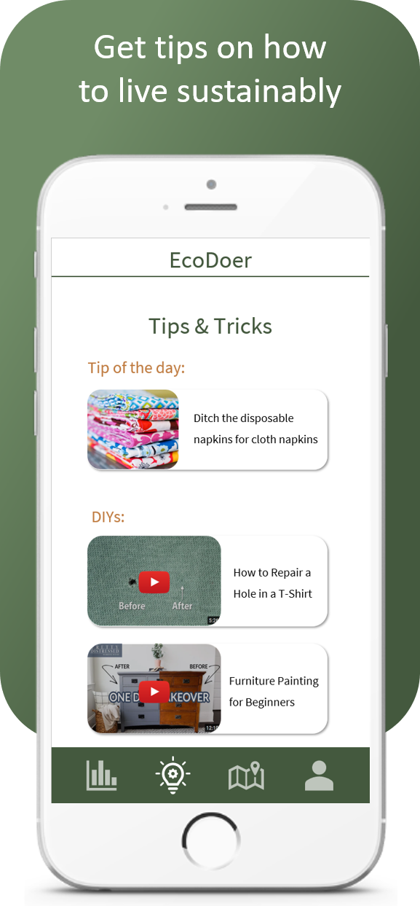

The challenge
With the development of our civilization, the influence of the technogenic and anthropogenic factors on the natural environment has constantly increased. These factors were predominantly destructive and negative, and have had a great impact on the human community. That is why ecological problems and environmental protection is currently one of the most important challenges of our time.
Nowadays many people are preoccupied with the environment and the future of our planet, but feel helpless in the face of such an overwhelming challenge. These problems are addressed at both the international and national levels.
Our idea is aimed at including as many people in the project as possible, and solving the challenge at the micro level, or, in other words, at the individual level.
Each person could make a small contribution, which then would have us all work together towards this common goal.
Micro efforts - Macro effects
We all want to contribute to a healthier planet, and to make greener choices - but how? We propose a solution with a combined database and reward system. It will help you to compare products, services and actions - and reward and encourage you to make the eco friendly choice!
Meet EcoDoer – an app for your smartphone to help you to make greener and more eco friendly micro choices and actions.
EcoDoer encourages eco friendly habits with its reward system, while also helping you to find greener choices with its crowdsourced database.


 
